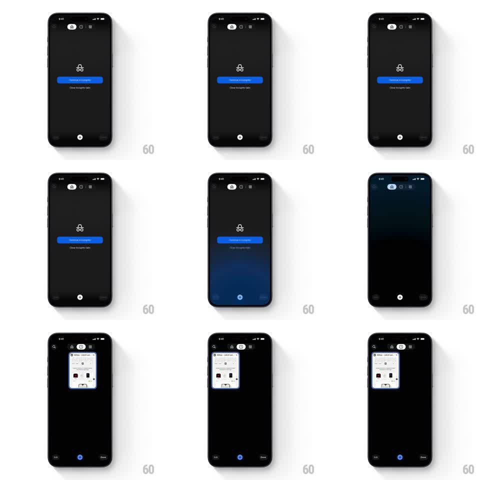

Media
Frame-by-frame

Rebuild this animation 1:1: Chrome mobile's close-incognito-tabs moment - the tab-switcher count icon emits a soft blue pulse, then the view slides horizontally from the incognito empty state to the regular tab list.

Rebuild this animation 1:1: Chrome mobile's close-incognito-tabs moment - the tab-switcher count icon emits a soft blue pulse, then the view slides horizontally from the incognito empty state to the regular tab list. ## Integration Integration: stack-agnostic spec - springs given as stiffness/damping, timed motions as duration + curve; map every value to your framework and animation library of choice. ## Scene Dark tab switcher: top bar with the incognito icon, tab-count pill, and overflow menu; the incognito empty state (incognito glyph, "Continue in Incognito" blue button, "Close Incognito tabs" text button). The regular side holds a grid of tab thumbnails with Edit and Done bar buttons. ## Motion spec Pattern: icon pulse + horizontal view slide, ~700ms. - Close tap: "Close Incognito tabs" triggers a blue radial pulse on the tab-count pill (scale 1 -> 1.35 -> 1, 350ms, with a soft blue halo fading over 400ms). - View slide: the whole switcher slides horizontally (incognito view exits left, regular tab grid enters from the right, 400ms, ease-in-out); the top bar's active segment moves with it. - Grid settle: the tab thumbnails fade/scale in (0.95 -> 1, 200ms, 50ms stagger) as the slide lands. ## Calibration - One pulse only - repeating it reads as a notification badge. - The pulse fires before the slide starts (100ms lead), so the eye catches where the count changed. ## Reduced motion No pulse; the two views cross-fade (200ms) without the horizontal slide. ## Don't miss - Direction matters: incognito to regular moves left-to-right content-wise (regular enters from the right). - The tab count in the pill updates as the slide completes, not before.